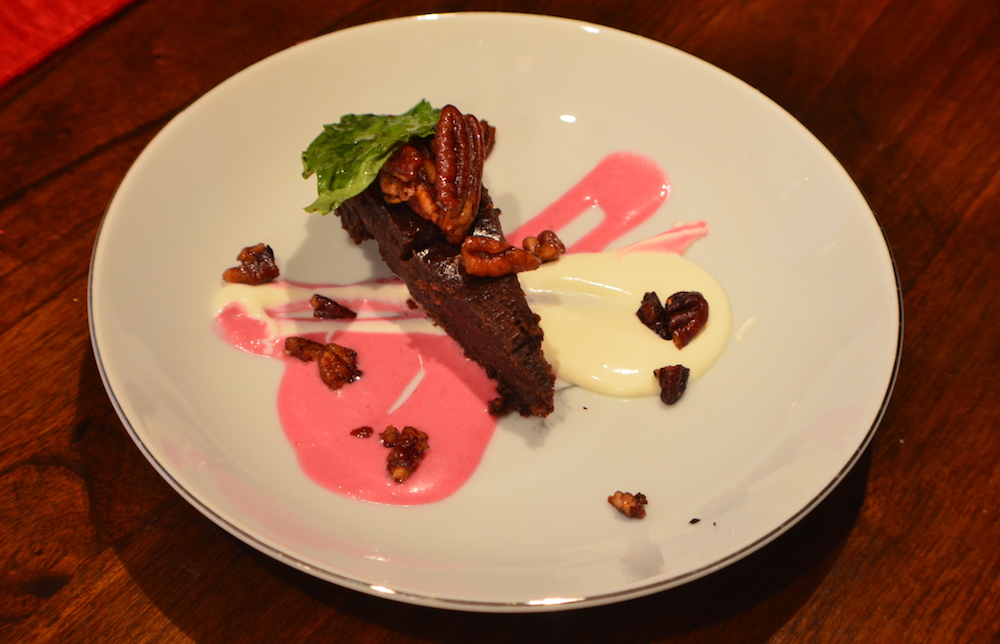

About
My name is Anthony Ludwig, I was born and raised in Southeast Wisconsin. I never cooked much when I was younger but, chose to go to culinary school and have developed a true passion for cooking. I will be in this field for the rest of my life because it ultimately makes me happy. I graduated from Waukesha County Technical College with an associates degree in culinary management. I have worked at a variety of restaurants that all have different styles such as, Cafe, individually owned focusing on pairing wine with daily menu changes, corporate, and fine dining (which is my absolute favorite). I have soaked up all this experience to get a better understanding of food, the culinary culture and environment. Personalized Palates is the first step to, one day, having my own restaurant and opening people's minds to new flavors and experiences of food.
I specialize in cross utilization of ingredients so often throughout a menu, I use the same ingredients in multiple different ways and provide many different flavors using the same ingredient. This helps save money and opens up people's opinions on how food can be used in many different flavor groups. Everyone has a preference on what they love to cook or eat and mine is first and foremost, seafood because the freshness is highlighted specifically. Fresh local and seasonal ingredients are another favorite of mine because there's many different ways to use them than most people think. Other favorites of mine include pork belly, duck, soups, dressings and sauces. I thoroughly enjoy experimenting and the feedback I've gotten from doing so is phenomenal which encourages me to continue working on building my skillset.
If you are interested in using Personalized Palates for an event contact me via email or phone number to set up a meeting. The event can be anything from a small coursed meal for a few friends to a casual style barbecue for 30+ and anything in-between. I also have experience in pairing food with wine so, that is always an option if interested. It is ideal to have me cook at your house or location of your choice to ensure the freshest quality of food and adjustments can be made if necessary. I currently live in Oconomowoc, WI and am willing to travel wherever the event is being held. Costs and charges will vary on market prices, time and location of events. Please take a look at some sample menus and previous menus from events I have already done. If you have any questions please do not hesitate to contact me for answers.
